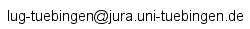

|
Linux User Group Tübingen | ||
|
|
Linux User Group Tübingen | ||
|
Vorträge
Zur Zeit gibts bei den LUGT-Treffen immer Vorträge. Die Unterlagen dazu kann man hier runterladen:

|
|
| In den Jahren 2002 und 2001 hat die LUGT bislang keine größeren Aktionen unternommen. Deshalb firmiert der Linux Day 2000 nach wie vor als 'aktuell'. Zu einigen Vorträgen des Linux Day gibt es inzwischen allerlei wissenswerte Informationen auch online. Links finden sich in der Themenübersicht. Ausserdem wäre da noch eine Seite mit Bildern, Credits und ein mpg von der Veranstaltung. | |
| 25. November 2000 | Linux Day 2000 |
| 17. Juni 2000 | Vortragsreihe "Linux auf verschiedenen Plattformen" |
| 9. März 2000 | Seminar "Rechtliche Einordnung von Hackerangriffen, insbesondere Portscans" |
| 13. November 1999 | LUGT Developers' Day |
| 5. Juni 1999 | 3. Installationsschau |
| 14. November 1998 | 2. Installationsschau |
| 9. Mai 1998 | 1. Installationsschau |
Außerdem im Angebot:
|
Die Linux User Group Tübingen (LUGT) ist ein loser Zusammenschluss
von Leuten, die Interesse am Betriebssystem Linux haben und dieses anwenden
oder benutzen möchten. Wir treffen uns regelmäßig einmal im
Monat, um Erfahrungen auszutauschen, Neuigkeiten auf der Linux-Welt in
Erfahrung zu bringen oder einfach nur um zusammenzusitzen und Klatsch und
Tratsch auszutauschen.
Zwischen den Treffen kennen wir uns vornehmlich als E-Mail-Adressen, die
über die Mailingliste der LUGT Neuigkeiten austauschen oder Hilfestellung
leisten bei Problemen rund um Linux. Von Zeit zu Zeit organisieren wir
darüber hinaus Ausstellungen, Seminare oder Vortragsreihen.
Alles in allem hoffen wir, kein Freakverein zu sein, sondern die LUGT ist
explizit auch dafür da, um nicht so versierten Linux-Anwendern Hilfen und
Anregungen zu geben.
Die Treffen finden im Moment in der Kneipe Marquartei, Herrenberger Straße in Tübingen, statt. Wir treffen uns jeden ersten Dienstag im Monat ab circa 20 Uhr im Nebenzimmer. Zu den Treffen sind nicht nur die LUGT-Mitglieder herzlich eingeladen, sondern wir freuen uns auch über Außenstehende, die sich für Linux interessieren oder Fragen zu Linux haben.
Ansprechpartner bei der LUGT erreicht man unter
lugt@jura.uni-tuebingen.de.
Der einfachste Weg zur LUGT ist jedoch die Mailingliste der User Group. Wer
ihr beitreten möchte,
geht am
besten
auf http://www.jura.uni-tuebingen.de/mailman/listinfo/lug-tuebingen.
Adresse der Liste ist dann .
|